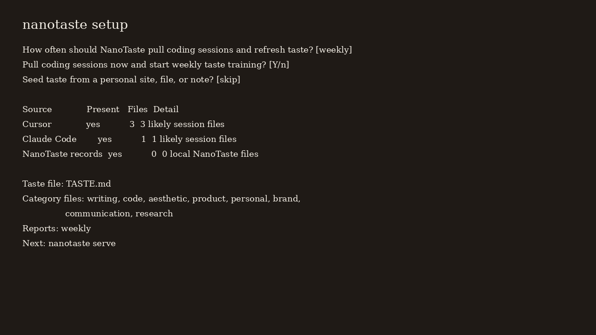
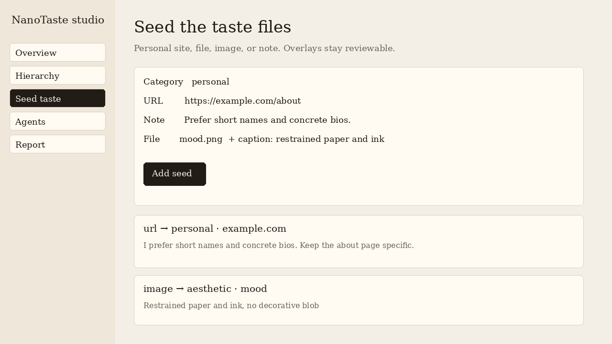
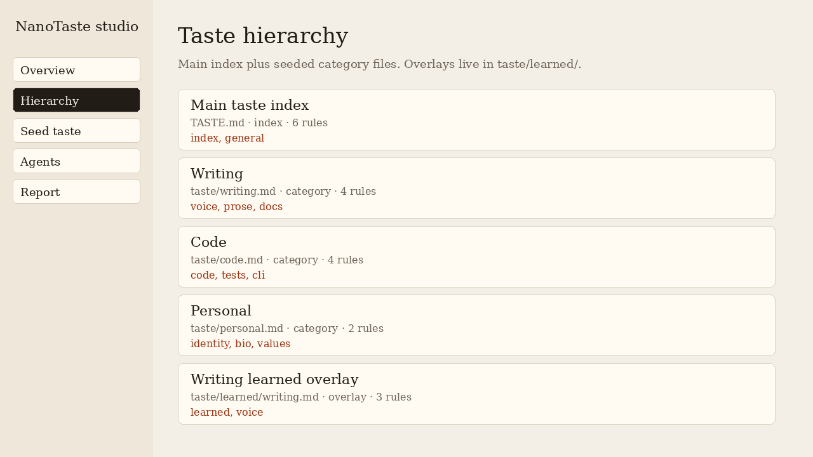

The whole loop, in order
From install prompt to a living taste hierarchy
Four steps. No dashboard account. The video below is the same path the README uses.
Video
Play this if you want the motion version. The stills underneath cover the same ground.
1. Install and answer the setup prompts
nanotaste setup discovers local coding agents, asks which ones to integrate, asks how often to pull sessions, and can take a personal URL, file, or note as the first seed.

2. The main file points at category files
TASTE.md is an index. It links to seeded files under taste/. Scheduled harvest writes overlays in taste/learned/ instead of silently rewriting the seeds.
TASTE.md
taste/writing.md
taste/code.md
taste/aesthetic.md
taste/product.md
taste/personal.md
taste/brand.md
taste/communication.md
taste/research.md
taste/learned/*.md3. Seed whatever actually describes you
A personal site, a bio, screenshots, or a folder of notes. The CLI and the local studio both accept URLs, files, images, and pasted text. Images use the caption and filename; there is no vision model.

4. Harvest on a schedule
nanotaste harvest pulls opted-in sessions, extracts lexical signals, refreshes overlays, and writes a report. nanotaste schedule --every weekly --install appends a crontab snippet when crontab is available.

Open the studio, not this site, to edit taste
nanotaste serve
# http://127.0.0.1:7468